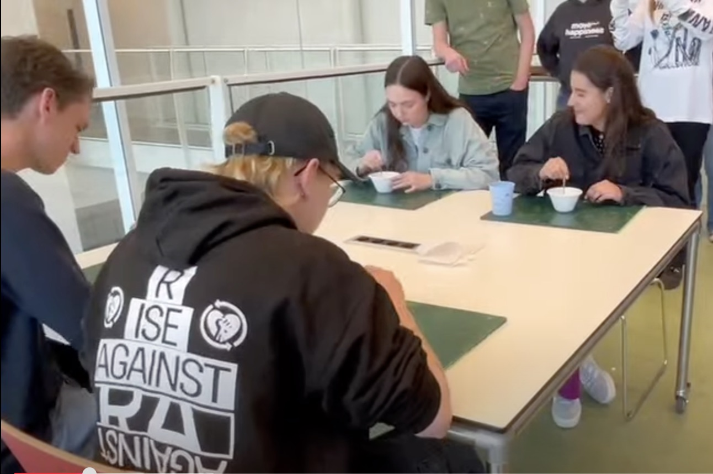

Souper Woman
Projectbeschrijving
Voor dit project heb ik een identiteit bedacht en vormgegeven voor een zelfverzonnen drankje. Hierbij ben ik met het keuzethema “funky” aan de slag gegaan. De uitingen hier zijn een flyer (voor- en achterkant), het blikje zelf, en een instagram story.
Mijn rol
Ik heb gekeken naar wat in mijn ogen “funky” is en waarom, en ben met die elementen een ontwerp gaan maken: hierbij heb ik gekeken naar kleuren, lettertypes, en vormen. Ook heb ik ervoor gezorgd dat de verschillende uitingen duidelijk bij elkaar horen door de identiteit uit te werken.

